Flujo conversacional
del
Desde el primer mensaje hasta el cierre, incluyendo consulta a SIRT y manejo de contingencias.
Del primer mensaje al cierre,
Vista ejecutiva: decisiones principales desde la entrada del usuario hasta el cierre.
Usuario inicia conversación
Agente recibe y entiende
Clasifica la intención
¿Requiere datos de SIRT?
Consulta SIRT
Construye respuesta
Cierre
Respuesta con conocimiento
El agente responde sin consultar SIRT cuando la solicitud no requiere datos externos.
SIRT no disponible
No inventa datos. Informa al usuario, registra el incidente y activa la notificación configurada.
Resultado final
Resuelto · aclaración · indisponibilidad · escalamiento.
Principio clave: el agente nunca debe fabricar información cuando SIRT no responde.
Entrada omnicanal — Web, WhatsApp u otro canal definido para producción. El flujo lógico del agente se mantiene.
Identificar
Antes de consultar información, el agente debe identificar al cliente por número telefónico.
Inicio
Usuario escribe
Solicitar contacto
Por política de Meta
Obtener número
Contacto compartido
Validar cliente
Buscar en base de datos
Continuar flujo
Pasa al flujo conversacional normal.
Cliente no encontrado
Informar, solicitar registro o derivar.
Este flujo ocurre antes de la consulta funcional del agente.
El flujo
Capturas reales de WhatsApp: solicitud de contacto y caso de cliente no encontrado en la base.
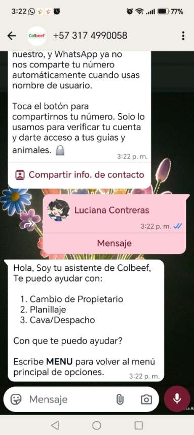
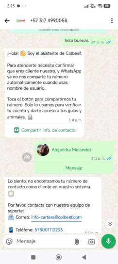
Transferir animales
El agente valida las guías del cliente, permite seleccionar animales y confirma el nuevo propietario antes de enviar la solicitud a SIRT.
Inicio
Cambio de propietario
Mostrar guías disponibles
Seleccionar guía
Listar animales
Seleccionar animales
Nuevo propietario
Confirmar acción
Enviar a SIRT
Este flujo aplica cuando el cliente solicita transferir animales a otro propietario.
El flujo
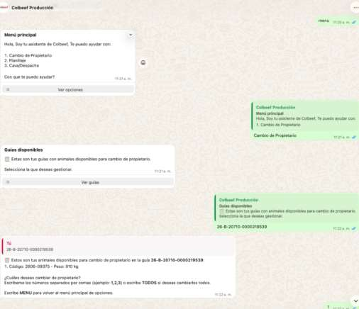
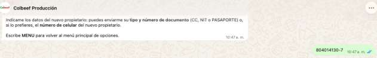
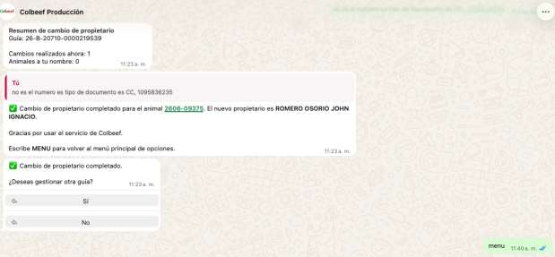
Registro de sacrificio
Inicio
Planillaje
Mostrar guías disponibles
Seleccionar guía
Registrar animales
Extraer información
Confirmar datos
Enviar a SIRT
Entregar resultado
Resultado y comprobante
Confirmación automática y envío de PDF.
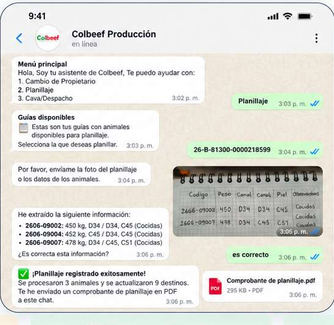
Despacho de cava,
Inicio
Programar envío
Enviar plantilla
Cliente completa
Recibir respuesta
Extraer información
Confirmar datos
Enviar a SIRT
Entregar resultado
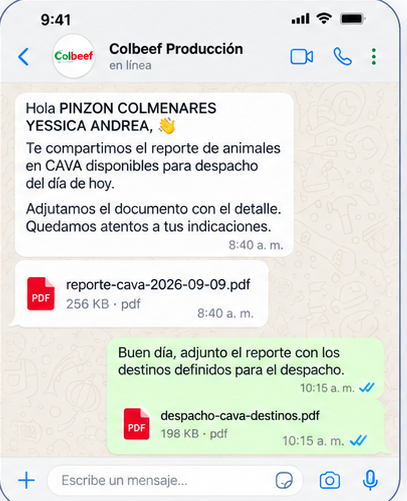
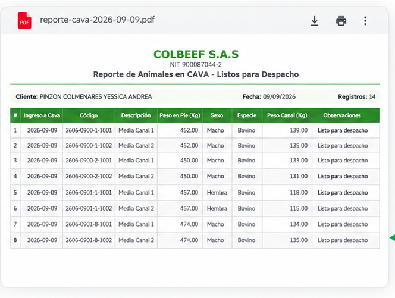
Este flujo aplica cuando el propietario despacha desde CAVA los animales listos para salida.
De un mensaje libre
Objetivo: convertir un mensaje libre del usuario en una solicitud clara y procesable.
Cuatro rutas,
El agente decide qué ruta ejecutar según la intención y la información requerida.
Consulta informativa
Responde con conocimiento autorizado, reglas del negocio o contenido disponible.
No requiere llamada a SIRT.
Consulta de datos / operación
Valida parámetros y consume SIRT para obtener información actualizada.
La respuesta depende del resultado del servicio.
Solicitud ambigua
Formula una aclaración puntual y vuelve a clasificar la intención.
Evita ejecutar consultas con datos incompletos.
Fuera de alcance
Explica el límite del agente y deriva al mecanismo definido de atención o escalamiento.
La intención puede cambiar durante la conversación; el agente vuelve a clasificar cuando el usuario aporta nueva información.
SIRT como fuente
SIRT actúa como fuente externa de datos para las solicitudes que dependen de información operativa.
Agente IA prepara solicitud
Valida parámetros
Invoca API SIRT
Evalúa respuesta
Normaliza datos y construye respuesta
Antes y durante la llamada
- Credenciales / autenticación
- Campos requeridos
- Formato de datos
- Timeout de la petición
- Código HTTP y estructura de respuesta
Después de recibir datos
- Resultado encontrado / no encontrado
- Errores funcionales de SIRT
- Datos mínimos para responder
- Mensaje comprensible para el usuario
No inventar información
Si SIRT falla, expira el tiempo de respuesta o devuelve un resultado inválido, el agente debe activar la ruta de contingencia.
La conversación continúa,
Respuesta segura
"En este momento no puedo validar la información porque el servicio externo no está disponible. La incidencia fue registrada."
El texto final se ajusta al tono aprobado por COLBEEF.
Vuelta a la ruta normal
Al restablecerse SIRT, el agente vuelve a la ruta normal automáticamente — sin intervención manual y sin perder el contexto de la conversación.
Cada falla,
Registro técnico
Guardar fecha/hora, endpoint, tipo de error, correlación de la conversación y estado de recuperación para diagnóstico.
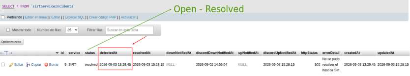
Alertas configuradas,
Alertas configuradas
Enviar notificación a los correos y números de teléfono definidos para incidentes de conexión con SIRT.
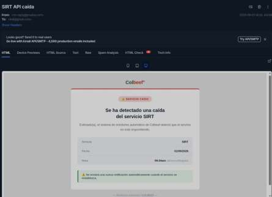
La recuperación
Alertas configuradas
Enviar notificación a los correos y números de teléfono definidos para incidentes de conexión con SIRT.
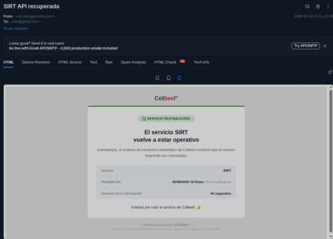
Recuperación: al restablecerse SIRT, el agente vuelve a la ruta normal.
Cada conversación termina
Cada conversación debe terminar en un estado explícito y trazable.
Resuelto
SIRT o la fuente interna entrega información válida. El agente responde y confirma si la solicitud quedó atendida.
Requiere aclaración
Falta un dato indispensable. El agente pregunta, conserva el contexto y retoma el flujo cuando el usuario responde.
SIRT no disponible
No hay información verificable. Se informa la contingencia, se registra y se activa la notificación correspondiente.
Escalamiento
La solicitud requiere intervención humana, un proceso no soportado o revisión adicional según las reglas definidas.
Resultado esperado: una experiencia consistente, con información verificable y una ruta clara cuando el servicio externo falla.
El flujo completo,
Esta lámina puede utilizarse como resumen ejecutivo del flujo completo.
Inicio
Usuario escribe
Entender
Intención + datos
Validar
¿Falta información?
Enrutar
Directo o SIRT
Consultar
API SIRT
Responder
Datos verificados
Cerrar
Resultado final
Falla de SIRT
Informar · registrar incidente · notificar responsables.
Responder y cerrar
Presentar información verificada y confirmar el resultado.
¿Cuándo ?
Un agente conversacional confiable no es el que siempre responde — es el que sabe cuándo no puede hacerlo. Este flujo documentado es la base para que Colbeef opere con trazabilidad total, sin fabricar información, desde el primer mensaje hasta el cierre.